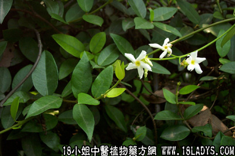

别名：穿根藤、络石藤。
植物名：穿根藤。
生长环境：本品为分枝多的匍匐草本。生于山坡或开旷地上，常见扳援于树上，或匍匐于石上。广州近郊山地亦常见。
分布：广东到处可见，我国南部各省亦常见。
入药部分：全株。
采集期：夏秋。
自采地点：山岗。
性味：性平、味淡。
功能：舒筋活络。
主治、用量和用法：1、风湿：干用1至2两，加鸡脚或猪脚筋，清水煎服；2、酒湿；3、四肢无力；4、跌打，（2、3、4）均同1用法。
验方1（治酒湿骨节痛方）：崧筋藤1两、千斤拔5钱、扒墙虎5钱、走马箭5钱、清水四碗、煎成一碗热服。
（方解）：长期嗜酒，可患酒湿。湿则肿，湿可生热，热则痛，热灼骨节，其痛更甚。本方崧筋藤能解酒毒，扒墙虎去湿热而定痛，千斤拔、走马箭利关节。毒解湿去，其痛自止。
（方歌）：酒湿骨节痛难当，崧筋藤走马箭匡，千斤拔出扒墙虎，湿热齐捐体复康。
验方2（治风湿方）：崧筋藤、丢了棒、豆豉羌、千斤拔、过江龙、川破石，以上每药5钱，清水四碗，煎成一碗温服。
（方解）：方中崧筋藤通筋活络而除风湿，豆豉羌，丢了棒祛风消肿，千斤拔壮筋而益肝肾。合为祛邪扶正之剂。
（方歌）：风湿邪侵肾着伤，寒生水肿豆豉羌，崧筋丢了千斤拔，益肝扶肾水还乡。